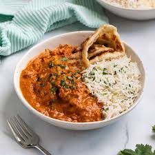

Home
Odin's Tikka Massala

Description
Tikka Massala is a classic Indian dish that features chicken breasts marinated in a mixture of spices and then grilled or baked until cooked through. The chicken is then topped with a rich and creamy sauce made from tomatoes, onions, garlic, ginger, and spices. The sauce is thickened with cream and yogurt, and it's served over the chicken, along with a side of rice or naan bread. Odin really outdid himself with this recipe.
Ingredients
- 1 pound chicken
- 1/2 cup yogurt
- 1/2 cup tomato paste
- 1/2 cup onion
- 1/2 cup garlic
- 1/2 cup ginger
- 1/2 cup cream
- 1/2 cup cilantro
- 1/2 cup mint
- 1/2 cup coriander
- 1/2 cup cumin
- 1/2 cup turmeric
- 1/2 cup garam masala
Steps
- Marinate the chicken in the yogurt, tomato paste, onion, garlic, ginger, and spices.
- Make the sauce by cooking the onion, garlic, ginger, and spices in the tomato paste.
- Add the cream and yogurt to the sauce and cook until thickened.
- Grill or bake the chicken until cooked through.
- Top the chicken with the sauce and serve.